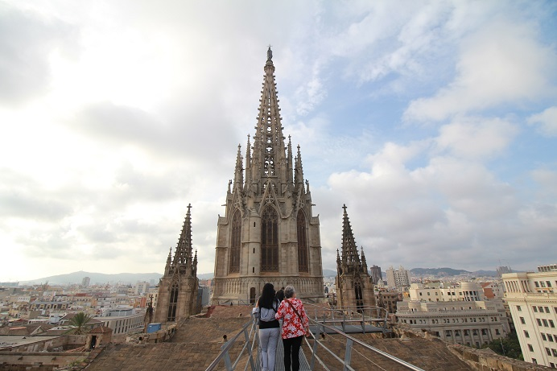

| 1 | : | Íbamos a ir a Barcelona en el avión de las 9:50 ese día. |
| 2 | : | Registramos nuestra salida a las 6:30 y fuimos al parqueo con el empleado del hotel. |
| 3 | : | El parqueo estaba cerca del hotel. |
| 4 | : | Llegamos al aeropuerto en unos 20 minutos. |
| 5 | : | La compañía de alquiler de autos no estaba abierta, y tuvimos que aparcar el coche en un lugar y colocar la llave en una caja especial. |
| 6 | : | El mostrador en el aeropuerto abrió y fuimos a los controles de seguridad. |
| 7 | : | En el control de seguridad solo yo tuve una inspección especial. |
| 8 | : | Tocaron mi ropa y mi bolsa con papel especial y colocaron el papel en una máquina para probar la reacción para saber si era droga. |
| 9 | : | Era una inspección al azar que la mayoría de personas no ha experimentado pero fue la segunda vez para mí. |
| 10 | : | Nunca gano la lotería, pero gano cosas como esa. |
| 11 | : | Por supuesto el resultado fue negativo. |
| 12 | : | Como llegamos temprano al aeropuerto, pudimos desayunar despacio. |
| 13 | : | El avión despegó a las 9:50 y llegó a Barcelona a las 11:20, a tiempo. |
| 14 | : | Durante hora y media de vuelo, John y yo dormimos profundamente. |
| 15 | : | Fuimos al hotel en taxi desde el aeropuerto. |
| 16 | : | Según el taxista era necesario hacer una reserva para entrar a la sagrada familia, por supuesto y también era necesario hacer una reserva por internet para entrar al Parque Güell. |
| 17 | : | Íbamos a ir al Parque Güell por eso fue bueno escucharlo. |
| 18 | : | Llegamos al hotel en menos de 30 minutos y pagamos €35.00 incluyendo la propina. |
| 19 | : | Creí que usar taxi fue la mejor forma de tener en cuenta el tiempo y el equipaje de cuatro personas. |
| 20 | : | Hotel EXE Laietana Palace es un hotel de 4 estrellas en la zona gótica de Barcelona. |
| 21 | : | La estación del metro que se llama "Jaume primero" estaba justo frente a nuestro hotel, pero no habíamos usado el metro en Barcelona. |
| 22 | : | El hotel era moderno y el tamaño era mediano. |
| 23 | : | Aunque no era hora de registrarnos, nos dijeron que ya habían preparado una habitación para John y para mí. |
| 24 | : | Kanako y Richard llegaron a nuestra habitación para dejar su equipaje. |
| 25 | : | Era la habitación de una esquina y podíamos ver un sitio arqueológico frente a la ventana. |
| 26 | : | Era una excelente ubicación para estar tres noches en Barcelona. |
| 27 | : | Primero hicimos una reserva por mi teléfono inteligente para entrar al Parque Güell al que íbamos a ir al día siguiente. |
| 28 | : | Pudimos reservar los billetes de las 18:00. |
| 29 | : | El billete incluía el servicio de autobús desde la estación más cercana, Alfons X costaba €10.00 por persona. |
| 30 | : | Entonces salimos para hacer turismo en la ciudad. |
| 31 | : | John fue a dejar su mochila porque quería moverse ligeramente. |
| 32 | : | Le dije que debería llevarla porque no sabía qué pasaría, pero no me escuchó. |
| 33 | : | Primero nos dirigimos al museo Picasso, cerca del hotel. |
| 34 | : | Barcelona es una gran ciudad y cuando estábamos caminando por la calle principal, creí que no era muy diferente a Tokio. |
| 35 | : | Sin embargo en la calle de atrás había edificios extraños y sitios arqueológicos y era una ciudad en la que quería dar un paseo lentamente. |
| 36 | : | Llegamos al museo Picasso en unos 5 minutos, sin perdernos. |
| 37 | : | Pagamos €12.00 por persona y entramos sin hacer cola. |
| 38 | : | El museo exhibe las obras de Picasso desde cuando él era niño. |
| 39 | : | Picasso me recordaba las obras de arte que habían sido difíciles de entender, pero sabía que había muchas obras normales. |
| 40 | : | No era un gran museo, pero había gran cantidad de obras y parecía que tradaría mucho tiempo ver cada obra cuidadosamente. |
| 41 | : | No me interesa tanto el arte, así que di la vuelta en el edificio y estuve esperando sentada en una silla. |
| 42 | : | John se interesa mucho en el arte y Kanako se graduó de una universidad de arte por eso estaban viendo las obras, en serio. |
| 43 | : | Después de salir del museo, nos dirigimos al Palau de Música Catalana que está a unos 10 minutos desde allí. |
| 44 | : | En el camino unos niños dibujaban en la carretera. |
| 45 | : | Pensé que era un país en el que nacen muchos artistas. |
| 46 | : | John les habló a los niños en español. |
| 47 | : | Le decían algo a John, pero no pude entenderlo porque hablaban muy rápido. |
| 48 | : | Cuando mi sobrina era niña, John hablaba mucho con ella y podía mejorar su japonés. |
| 49 | : | Hablar con niños puede ser muy buena práctica. |
| 50 | : | Nos despedimos de los niños y pronto encontramos el Palau de Música Catalana, de ladrillo. |
| 51 | : | El Palau de Música Catalana es una obra maestra del arquitecto Montaner y se ha registrado como Patrimonio de la Humanidad. |
| 52 | : | Es la sala de conciertos que fue construida en 1908 para el famoso coro de la región Catalana que se llama Orpheo Catalan. |
| 53 | : | En 5 minutos habría un tour, a las 16:00 y compramos los billetes. |
| 54 | : | Un mini concierto de piano estaba incluido y costaba €25.00 por persona. |
| 55 | : | Dimos la vuelta al edificio con la guía. |
| 56 | : | Era un edificio hermoso y artístico. |
| 57 | : | Especialmente el gran salón era maravilloso. |
| 58 | : | El candelabro de vidrio en el techo era espléndido. |
| 59 | : | En el gran salón disfrutamos del mini concierto de piano. |
| 60 | : | No me interesa tanto el arte, pero me encanta la música clásica por eso fue un momento muy lujoso y elegante para mí. |
| 61 | : | Después del tour de una hora, tomamos un tentempié en la cafetería del primer piso del edificio. |
| 62 | : | No habíamos comido desde que desayunamos en el aeropuerto así que teníamos hambre. |
| 63 | : | La cafetería era muy elegante y parecía cara, pero los precios eran razonables. |
| 64 | : | Nuestros estómagos estaban contentos y nos dirigimos a la catedral de Santa Eulalia. |
| 65 | : | La catedral estaba muy cerca de nuestro hotel. |
| 66 | : | La catedral de Santa Eulalia fue construida desde el siglo XIII hasta el siglo XV, por aproximadamente 150 años. |
| 67 | : | Después de eso la renovaron varias veces y llegó a tener su forma actual a principios del siglo XX. |
| 68 | : | Pagamos €7.00 por persona y entramos. |
| 69 | : | El interior era hermoso y había muchas decoraciones maravillosas pero no era tan brillante, era diferente a otras catedrales. |
| 70 | : | Subimos al ascensor dentro de la catedral. |
| 71 | : | El ascensor llegó al techo de la catedral. |
| 72 | : | En Japón nos dicen que no veamos a Dios desde arriba, por eso me sorprendió. |
| 73 | : | La vista de Barcelona desde el techo de la catedral fue increíble. |
| 74 | : | Pudimos ver la sagrada familia a lo lejos. |
| 75 | : | Un hombre nos pidió tomarle una foto. |
| 76 | : | Él era italiano y hablamos un poco en español simple. |
| 77 | : | Después de salir de la catedral nos dirigimos a la Casa Güell. |
| 78 | : | En el camino, había mucha gente frente al edificio en la plaza. |
| 79 | : | Le preguntamos a una mujer que estaba cerca y nos dijo que el edificio era el ayuntamiento y la gente estaba esperando el comienzo del festival de Barcelona. |
| 80 | : | El festival comenzó en 1871 para nuestra Señora de la Ciudad, Merce. |
| 81 | : | Entonces la proyección mapping comenzó en la pared del edificio del ayuntamiento y la gente de Barcelona celebraba bebiendo cerveza. |
| 82 | : | En ese momento la tarjeta SD de la cámara de John estaba llena. |
| 83 | : | Y la batería estaba casi vacía. |
| 84 | : | La tarjeta SD y la batería extra estaban en la mochila que había dejado en el hotel. |
| 85 | : | John y yo tenemos una cámara Cannon SLR cada uno, pero la cámara de John es más cara. |
| 86 | : | Obviamente era mejor tomar fotos con la cámara de John. |
| 87 | : | En mi mente dije "por eso te dije que era mejor traer tu mochila" pero le di la batería de mi cámara. |
| 88 | : | Kanako le prestó una nueva tarjeta SD. |
| 89 | : | Desde entonces yo estuve tomando fotos con mi teléfono inteligente. |
| 90 | : | Según mi libro guía, la casa Güell iba a cerrar a las 20:00 por eso nos dirigimos a allí rápidamente. |
| 91 | : | Sin embargo en el camino en la avenida que se llama Las Ramblas, había mucha gente. |
| 92 | : | Porque había comenzado el festival de Merce. |
| 93 | : | Había un gran desfile tirando unas muñecas grandes y había muchos espectadores alrededor del desfile. |
| 94 | : | Las Ramblas también es un destino turístico popular pero estaba tan llena de gente que no pudimos tener la vista regular de la avenida. |
| 95 | : | Avanzábamos poco a poco y llegamos a la casa Güell casi a las 19:30, finalmente. |
| 96 | : | Sin embargo nos dijeron que la entrada de los clientes generales había finalizado y solo hubo un tour con un guía incluyendo una proyección mapping de las 20:00. |
| 97 | : | Pagamos €18.00 por persona y compramos el tour. |
| 98 | : | Mientras esperábamos el tour, había un hombre con un perro enfrente de la entrada. |
| 99 | : | Era un perro grande, pero era muy gracioso y John le preguntó si le podía tomar unas fotos y el hombre respondió "Sí". |
| 100 | : | Después de ver la cámara y el lente de john, él quiso ver las fotos de su perro. |
| 101 | : | John se las mostró y el hombre estaba muy feliz y el perro parecía que quería verlas también. |
| 102 | : | El hombre tenía un tatuaje con una frase en su brazo y John le preguntó el significado. |
| 103 | : | Le dijo que la frase era para su esposa enferma y significa que "todos tienen derecho a vivir". |
| 104 | : | Si hubiéramos estado en Kenia, primero nos habría cobrado por tomarle fotos a su perro. |
| 105 | : | Entonces después de hablar sobre su esposa enferma, nos habría pedido dinero otra vez. |
| 106 | : | Pero los españoles no son así. |
| 107 | : | Sinceramente recé para que su esposa se recuperara. |
| 108 | : | A las 20:00 comenzó el tour. |
| 109 | : | Era una guía en inglés y había casi 20 personas en el grupo. |
| 110 | : | La Casa Güell es una de las primeras obras maestras de Gaudí y se ha registrado como Patrimonio de la Humanidad. |
| 111 | : | El señor Güell era un hombre de negocios y el mejor amigo y el más grande patrón de Gaudí. |
| 112 | : | Para construir la casa Güell, Gaudí trabajó 4 años para el señol Güell y completó su trabajo en 1886. |
| 113 | : | La casa está en un terreno de 500 metros cuadrados, con 4 pisos y un sótano de un piso. |
| 114 | : | El exterior era muy simple, pero el interior era muy hermoso y funcional. |
| 115 | : | Al final del tour nos sentamos en las sillas reclinables en el salón de la casa y disfrutamos de la proyección mapping en el techo. |
| 116 | : | Después del tour, le preguntamos a la guía qué restaurante era bueno para cenar. |
| 117 | : | Ella nos enseñó la dirección opuesta a Las Ramblas. |
| 118 | : | Caminamos hacia allí, pero estaba tranquilo y había solo personas locales. |
| 119 | : | Creímos que no habíamos tenido ningún problema durante el día, pero que debíamos cuidarnos así que volvimos a la animada Ramblas. |
| 120 | : | Entramos en un bar que se llama Orio, cerca del hotel. |
| 121 | : | Estaba bastante lleno, pero pudimos entrar rápido. |
| 122 | : | Había muchos tipos de tapas en el mostrador. |
| 123 | : | Podíamos llevar cualquier tapa de allí. |
| 124 | : | Todas las tapas costaban €2.20 cada una. |
| 125 | : | Cada tapa tenía un palillo y al final pagaríamos según el número de palillos. |
| 126 | : | Todas las tapas estaban deliciosas y comimos una tras otra. |
| 127 | : | Después de comer alineamos los palillos en un plato para que el mesero pudiera contarlos fácilmente. |
| 128 | : | Comimos mucho y eventualmente pagamos más de €100.00. |
| 129 | : | Según el empleado hay algunos clientes que tiran los palillos en el piso o en sus bolsillos. |
| 130 | : | Nos dijeron que aunque lo saben, cuentan los palillos en el plato. |
| 131 | : | John dijo que en Kenia, un bar como este, absolutamente, quebraría. |
| 132 | : | Regresamos al hotel y nos duchamos. |
| 133 | : | No había bañera, pero la habitación era espaciosa y cómoda. |
| 134 | : | Al día siguiente íbamos a ir a la Sagrada Familia, así que saqué el billete del tour para revisar las notas. |
| 135 | : | Como estaba escrito en inglés, se lo di a John y me dormí. |
{kind=link}
{kind=link}
{kind=link}
{kind=link}
{kind=link}
{kind=link}
{kind=link}
{kind=link}
{kind=link}
{kind=link}
{kind=link}
{kind=link}